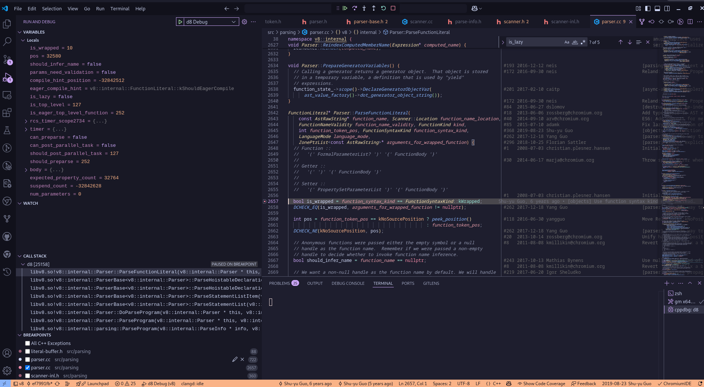
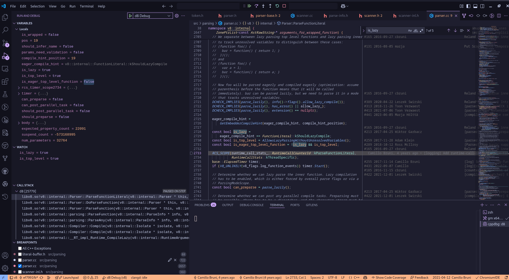
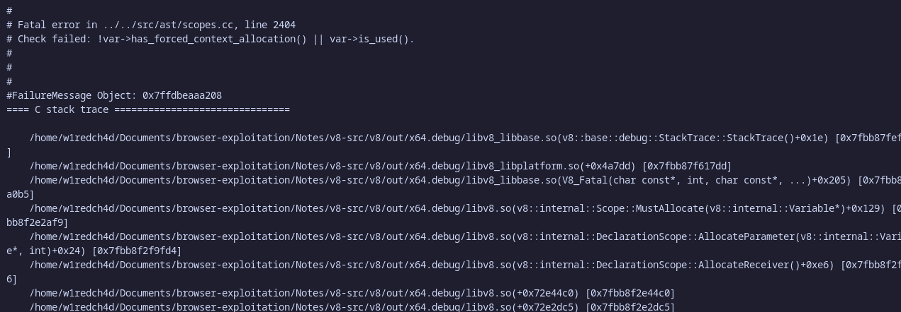

Compilation Parser And AST
Parsing is the next phase after Lexical Analysis . It takes the stream of tokens generated by the lexer as input and constructs a hierarchical structure (like an AST) that represents the grammatical structure of the program according to the language’s syntax and rules . The parser checks if the sequence of tokens forms a valid program in the language.
In V8’s pipeline, the parser receives the tokens from the lexer and produces the Abstract Syntax Tree (AST) . This AST serves as the foundation for subsequent stages like bytecode generation by the Ignition interpreter and optimizations by the JIT compilers (Sparkplug, Maglev, Turbofan).
Parser in V8
In the V8 JavaScript engine, once the scanner completes its job, the next critical component in the compilation pipeline is the “parser”. The scanner produces a sequence of tokens, which serve as the primary input for the parser. As the parser works through the process of compiling JavaScript code, it continuously interacts with the scanner, frequently invoking it to supply the next set of tokens needed for parsing. To understand this interaction more deeply, we can examine a specific part of the parser’s implementation. A good starting point for this exploration is the DoParseProgram function, which plays a central role in initiating the parsing of JavaScript programs. By analyzing this function, we can gain valuable insights into how the parser operates and how it coordinates with the scanner during the compilation process.
The result variable defined in the function in this case will later hold the Abstract Syntax Tree (AST). The AST is a structured representation of the JavaScript code that the parser builds as it processes the tokens. Once the DoParseProgram() function finishes its execution, the complete AST is generated and stored in this result variable. In the context of our example, after the AST has been successfully constructed, the program proceeds to invoke the next method in the compilation sequence, which continues the process based on the parsed and structured code. However following our testcase back in the previous module the ParseStatementList method will be called, it is responsible for parsing the program statements. Inside the method when peek is called , it takes out the type of the token, for our testcase the type obtained by the peek method is Token::kFunction hence the result of the first while loop in the method is false and it jumps to the second while loop and invokes the method ParseStatementListItem(). After the function is called we hit a large switch case which takes actions based on the token type determined by the peek() method , since our token type is Token::kFunction we hit the return ParseHoistableDeclaration(nullptr, false); and the ParseHoistableDeclaration(ZonePtrList<const AstRawString>* names, bool default_export) method is called. Inside the method we encouter Consume(Token::kFunction);, that Consume(Token::Value token) method is the token cache we talked about in the JS Engine Pipeline of V8’s parser in the first article Intro to V8. After obtaining the token type , we need to figure out which FunctionKind the function is. The Token::kFunction and FunctionKind serves two different purposes as, Token::kFunction is just a part of the JS Engine pipeline in V8 but FunctionKind is an ECMA Specs. Now that the parsing part is complete, here is a basic control flow view of the parser in V8 with our testcase :
Parser Optimization Techniques in V8
Lazy Parsing is an optimization technique in V8 , where the main idea is that the JavaScript code is not fully analyzed or processed (i.e., parsed) until it’s actually needed — meaning, until the moment it is about to be executed.
In many programs, some parts of the code might never run. For example, code inside an if statement might not execute if the condition is false, or a function might never be called. So, parsing everything right away can waste time and memory.
To avoid this, V8 delays the parsing of such code until it’s absolutely necessary — this is what we call lazy parsing. Similarly, it also delays turning the code into executable machine code, which is known as lazy compilation.
By using both lazy parsing and lazy compilation, V8 can run JavaScript more efficiently, especially when dealing with large programs where not all code is used.
For example , in our case, the is_greater’s type is kNormalFunction, which is the function to be executed immediately, so we need to parse it immediately., hence After analyzing the function name (is_greater), ParseFunctionLiteral will be called, which is responsible for parsing the function body.
Referring back to our testcase :
function is_greater(a){
if(a > 1337){
return "GREATER!!";
}
}
console.log(is_greater(13337));
You’ll notice that the function is_greater is not executed right away when the program run as first. This behavior meets the condition for lazy parsing. In other words, because the function is not immediately needed, V8 chooses to delay parsing it until it actually gets called.
We can understand this better by looking at the JavaScript code. First, console.log() is executed. Inside that console.log() call, the function is_greater is then invoked. Since is_greater is not used until later, V8 doesn’t need to parse it immediately — which is exactly what lazy parsing aims to optimize.
To confirm this behavior, we can use debugging tools and take a closer look at how V8 handles this function. One way is by setting a breakpoint in the ParseFunctionLiteral method, which is responsible for parsing function definitions. Here is the initial breakpoint screenshot from the debug:

Notice in the callstack , the functions which are being executed is the same as we discussed above, also lets watch the is_lazy and is_top_level variables and see how they changes with further debugging.

From this, we observe that two important member variables — is_lazy and is_top_level — are both set to true. This strongly supports our earlier claim: the function is parsed lazily and is recognized as a top-level function that doesn’t need to be parsed right away.
Additionally, we can inspect the Abstract Syntax Tree (AST) — a structural representation of the code — by running the following command:
./out/x64.debug/d8 --print-ast ../test.js ─╯
[generating bytecode for function: ]
--- AST ---
FUNC at 0
. KIND 0
. LITERAL ID 0
. SUSPEND COUNT 0
. NAME ""
. INFERRED NAME ""
. DECLS
. . FUNCTION "is_greater" = function is_greater
. EXPRESSION STATEMENT at 66
. . kAssign at -1
. . . VAR PROXY local[0] (0x557657fd24c8) (mode = TEMPORARY, assigned = true) ".result"
. . . CALL
. . . . PROPERTY at 74
. . . . . VAR PROXY unallocated (0x557657fd2588) (mode = DYNAMIC_GLOBAL, assigned = false) "console"
. . . . . NAME log
. . . . CALL
. . . . . VAR PROXY unallocated (0x557657fd2370) (mode = VAR, assigned = true) "is_greater"
. . . . . LITERAL 13337
. RETURN at -1
. . VAR PROXY local[0] (0x557657fd24c8) (mode = TEMPORARY, assigned = true) ".result"
[generating bytecode for function: is_greater]
--- AST ---
FUNC at 19
. KIND 0
. LITERAL ID 1
. SUSPEND COUNT 0
. NAME "is_greater"
. INFERRED NAME ""
. PARAMS
. . VAR (0x557657fd2400) (mode = VAR, assigned = false) "a"
. DECLS
. . VARIABLE (0x557657fd2400) (mode = VAR, assigned = false) "a"
. IF at 25
. . CONDITION at 30
. . . kGreaterThan at 30
. . . . VAR PROXY parameter[0] (0x557657fd2400) (mode = VAR, assigned = false) "a"
. . . . LITERAL 1337
. . THEN at -1
. . . BLOCK at -1
. . . . RETURN at 41
. . . . . LITERAL "GREATER!!"
Case Study of a Parser Bug
Before we delve into what the bug is we need to clear out the concept of scopes in javascript:
Scopes in Javascript : Concept
According to the definition on MDN : “The scope is the current context of execution in which values and expressions are “visible” or can be referenced.”
Lets break the definition down into a more simpler term with a code example:
So to simplify, Scope is just where a variable can be used in your code. Lets take the following code for example:
let x = 10; // Global scope
function myFunction() {
let y = 5; // Local scope (only inside this function)
console.log("Inside function - x:", x); // Can access x
console.log("Inside function - y:", y); // Can access y
}
myFunction();
console.log("Outside function - x:", x); // Can access x
console.log("Outside function - y:", y); // Error: y is not defined
The variable x can be accessed anywhere on the entire code as it is in the global scope whereas its not the same case with the variable y as it is only scoped to the myFunction method in the code block. However this is a single example, in Javascript there are three main kind of scopes:
Global scope: The default scope for all code running in script mode.
Module scope: The scope for code running in module mode.
Function scope: The scope created with a function.
In our example we saw the example of two out of those three scopes, the function and the global scope. In addition, identifiers declared with certain syntaxes, including let, const, class, or (in strict mode) function, can belong to an additional scope:
Block scope: The scope created with a pair of curly braces (a block).
Lets understand this with an example:
function blockscope(a, b) {
if (a > b) {
let scope = "UwU it worked"
}
console.log(scope)
}
blockscope(2, 1);
Outputs:
VM77:5 Uncaught ReferenceError: scope is not defined
at blockscope (<anonymous>:5:17)
at <anonymous>:1:1
on executing the above code, we get a ReferenceError even though we are trying to access the variable within the same function this is because it was declared using the let keyword and hence its scoped the the block it was defined under, which is why it is not “visible” to the engine anywhere outside the block, now lets try the same example using the var keyword instead of the let keyword:
function blockscope(a, b) {
if (a > b) {
var scope = "UwU it worked"
}
console.log(scope)
}
blockscope(2, 1);
Outputs:
UwU it worked
Now the code starts to function as expected as it is scoped to the function and not just the block.
Scope Chaining
Whenever the js engine is unable to resolve a variable in the current scope it keeps moving into the outer scope step by step trying to find the said variable, here is a flow diagram for a better understanding:
Scopes in Javascript : V8 Implementation
Let us now dig into how these scopes are implemented in v8’s parser. According to the v8 design documentation, V8 utilizes different types of parsing scopes, each tailored for specific parsing contexts:
-
ExpressionParsingScope: Used for most ambiguous expression parsing. It tracks expression and pattern errors. However it is completely different from the
scopesconcept in javascript,ExpressionScopeis used during parsing to handle the complexities of JavaScript syntax and to defer decisions about the nature of certain code constructs. It helps in tracking potential interpretations, classifying errors, and gathering information about variables. This information gathered byExpressionScopesthen contributes to the creation of the actualScopewithin the AST, which represents the program’s lexical environment and is used during the execution of the JavaScript code by the interpreter and compilers. Here is the differences in a tabular format for better understanding:Feature ExpressionScope Scope Phase Primarily exists and is used during the parsing phase of the JavaScript code. Represents the lexical environment and is a structural element within the Abstract Syntax Tree (AST), persisting beyond parsing and used during the execution phase. Purpose Acts as a helper object to manage syntactic ambiguities (e.g., object literal vs. destructuring pattern). It helps in tracking potential interpretations, classifying errors based on these possibilities without immediate commitment. Also used to track identifiers that might become assignment targets, declarations, or unresolved references. Represents the lexical scope of variables, determining their accessibility and lifetime during code execution. It’s built during parsing and reflects where variables are declared (global, function, block) and how scope resolution works. Lifespan Temporary data structure that exists until the parser has enough information to resolve an ambiguity. Once the parser determines the correct interpretation, the ExpressionScope is validated and might be discarded. Persistent structure within the AST that reflects the program’s lexical organization and is used throughout the execution pipeline by the interpreter (Ignition) and JIT compilers (Sparkplug, Maglev, Turbofan). Error Handling Facilitates deferred error classification by tracking errors relevant to different potential interpretations (expression, pattern, declaration). Errors are validated and potentially thrown when the scope’s purpose becomes clear. AccumulationScopes prevent errors from one neighboring expression from affecting others. Errors related to scope (e.g., undeclared variables) are generally identified and recorded based on the structure of the AST and the established scopes, often after the initial parsing phase. Variable Tracking Used to track potential variable declarations and assignment targets during ambiguous parsing situations. This tracking is done in a way that allows for discarding the information if the construct resolves to an expression or marking them as assigned or declared if it resolves to a pattern or declaration. Explicitly defines where variables are declared and manages their scope within the lexical environment. Scope resolution during execution relies on the hierarchical structure of these scopes to find variable bindings. Relationship ExpressionScope facilitates the parsing process and gathers information that contributes to the creation of the actual Scope information in the AST. It helps the parser navigate syntactic ambiguities so that the correct scope structure can be built. Scope is the result of the parsing process, reflecting the lexical structure of the code regarding variable accessibility. The information gathered through mechanisms like ExpressionScope helps in correctly defining these scopes in the AST. Analogy Can be thought of as a scratchpad or a temporary context that the parser uses to explore different syntactic possibilities before committing to a final structure. Represents the blueprint of how variables are organized and accessible during the program’s runtime. -
ArrowHeadParsingScope: Used more selectively when there is a strong indication that an arrow function is being parsed. It tracks expression, pattern, and declaration errors. Indicators for using this scope include identifiers followed by
=>,asyncfollowed by an identifier then=>,(..., andasync(.... -
DeclarationParsingScope: Activated when the parser definitively knows it’s parsing a declaration. In this scope, errors are thrown immediately if they are relevant, and no error classification is needed afterwards. Examples of declarations include
ParameterDeclaration,VariableDeclaration, andLexicalDeclaration. -
AccumulationScope: Used for managing neighboring expressions, such as within array literals, object literals, and comma-separated expression lists (like arrow function parameters). This scope prevents errors from one expression from incorrectly affecting the parsing of its neighbors and merges errors outwards.
Handling Ambiguous Syntax
A key role of these scopes is to handle ambiguities in JavaScript syntax. For instance, object/array literals and destructuring patterns share similar syntax. By using different parsing scopes, V8 can defer the classification of these constructs until more information is available.
Consider the example from the source: {x:[a],y}. Without further context, it’s unclear whether this is:
- An object literal with properties
x(an array containinga) andywith valuey. - A destructuring target where
awould be assigned the value of the incoming object’sxandythe value ofobject.y.
The use of classifying scopes like ExpressionParsingScope and ArrowHeadParsingScope allows the parser to track potential errors related to both interpretations (expression and pattern) without immediately committing to one. Once the parser has more context (e.g., if this is on the left-hand side of an assignment), the scope is validated based on the specific subclass, and the correct interpretation is determined.
Another example involves the keyword "let". While "let" is not allowed as a lexical declaration within an object literal destructuring (e.g., const {a:[let]} = ...), it is valid within an expression context (e.g., ({a:[let]})). Different scope types correctly handle this distinction. A DeclarationParsingScope would immediately flag "let" as an error in the first case, while an ExpressionParsingScope would allow it.
Case Study : What is the bug
The bug we are going to discuss in this case study is CVE-2024-5274 which was an in the wild exploit for a flaw on the v8 parser, which was fixed in this update. Lets take a look on what the patch for the bug is :
diff --git a/src/ast/scopes.cc b/src/ast/scopes.cc
index 660fdd2..de4df35 100644
--- a/src/ast/scopes.cc
+++ b/src/ast/scopes.cc
@@ -2447,7 +2447,7 @@
var->set_is_used();
if (inner_scope_calls_eval_ && !var->is_this()) var->SetMaybeAssigned();
}
- DCHECK(!var->has_forced_context_allocation() || var->is_used());
+ CHECK(!var->has_forced_context_allocation() || var->is_used());
// Global variables do not need to be allocated.
return !var->IsGlobalObjectProperty() && var->is_used();
}
diff --git a/src/parsing/parser-base.h b/src/parsing/parser-base.h
index 40914d3..65c338f 100644
--- a/src/parsing/parser-base.h
+++ b/src/parsing/parser-base.h
@@ -2661,6 +2661,7 @@
}
FunctionState initializer_state(&function_state_, &scope_, initializer_scope);
+ FunctionParsingScope body_parsing_scope(impl());
AcceptINScope accept_in(this, true);
// Each static block has its own var and lexical scope, so make a new var
Note: How we get the patch is by going to https://chromium-review.googlesource.com/q/bug:341663589 the the number after the
bug:can be found on the chromium update link, this is generally the rule of thumb for getting the patch on restricted issues for understanding the rootcause of the bug.
The core of the fix is the introduction of a FunctionParsingScope when parsing the static initialization block of a class. Here’s a more detailed look at what this implies:
-
FunctionParsingScope: This new variable, when created, stores the currentexpression_scope_of the parser and restores it upon destruction. This behavior suggests thatFunctionParsingScopeis designed to create a temporary, isolated scope during the parsing of function-like structures. -
Blocking the Parent
ExpressionScope: The crucial point is thatFunctionParsingScopeblocks theExpressionScopechain from indexing its parent. This means that during the parsing of the static initialization block, the currentExpressionScopewill not be able to directly access or be influenced by its enclosingExpressionScope.
Without this isolation, the parsing process within the static initialization block could have unintended consequences on the parent ExpressionScope. The function RecordThisUse, is called by UseThis function to handle the this keyword. In JavaScript, this has specific scoping rules within functions, such as:
function showThis() {
function innerThis() {
return this;
}
console.log(this == innerThis());
}
let obj = {};
obj.showThis = showThis;
obj.showThis();
The output will be:
false
since the this variable cannot be passed between function calls. However, the introduction of ES6 arrow functions brought a change in how the this keyword is handled. Unlike traditional functions, arrow functions can lexically capture the this value from their surrounding scope. This means that within an arrow function, this refers to the this of its outer function or global scope. To correctly support this behavior, the parsing of this within arrow functions requires special handling. As indicated by the UseThis function in V8, when the parser encounters the this keyword, it needs to consider the current and enclosing Scopes. The UseThis function checks if the inner (closure_scope) and outer (receiver_scope) Scopes are the same, “which can be a strong indicator that the head of an arrow function is being parsed in which case parser haven’t realized yet that closure_scope != receiver_scope”, as shown in the following code:
function foo() {
(arg = this.a) => { console.log(arg); }
}
foo()
At the point where the arrow function is being parsed, its lexical scope has not yet been fully established or allocated. Consequently, when the this keyword is encountered within the body of the arrow function, it cannot be immediately bound to a concrete scope. To address this, an intermediate structure—referred to as ExpressionScope is employed to track the usage of this during this preliminary phase.
Specifically, when the parser identifies a reference to this by the UseThis function, it invokes the RecordThisUse routine, which annotates the current and all enclosing ExpressionScope instances to indicate that the this binding is required. This deferred recording ensures that, once the lexical scope of the arrow function is later finalized and properly instantiated, the appropriate binding for this consistent with the surrounding lexical environment is correctly resolved and allocated. Here is the video of the callstack for a better understanding:
Now, the core issue arises from the misuse of lexical tracking mechanisms during the parsing and scope resolution of the this keyword within certain special constructs—specifically, class static blocks. These static blocks, although written inside a class body, semantically behave much like function blocks in terms of scoping and execution.
When the this keyword is encountered during the parsing of code inside an arrow function, and prior to the actual allocation of its lexical scope, a mechanism is employed where references to this are deferred via the ExpressionScope chain. This mechanism is designed to bubble up the usage of this until a concrete function or method scope is finally established. The purpose is to ensure that when scope resolution eventually occurs, the correct outer this context (as per lexical scoping rules) is captured.
However, this deferred resolution strategy does not account for all types of code blocks that should terminate the propagation of this usage through the ExpressionScope chain—specifically, class static blocks.
Class static blocks do not have a this binding of their own; and more importantly, any usage of this within them is illegal and should not imply a dependency on an outer lexical this. Yet, since the static block is not currently being treated as a boundary or terminator in the ExpressionScope chain (i.e., not being recognized as a scope that should stop the upward propagation of this usage), any this reference within it is mistakenly marked as an access to an outer lexical this.
As a result, when RecordThisUse propagates the this usage up through the ExpressionScope hierarchy, it ends up incorrectly marking the enclosing function or class constructor as needing a this binding—even though, semantically, the static block should have blocked this propagation.. The PoC is as follows:
function f1() {
(arg = class AAA {
static {
this;
}
}) => { }
}
f1();
Since the outer function f1 does not actually use this, but it is marked as has_forced_context_allocation, triggering the DCHECK when allocating this variable.

And here is the control flow of the entire exploit in mermaid view :
In the next blog i will delve deeper into bytecode generation and more on the case study of this bug related to it due to the inconsistent bytecode generation and exploiting the bytecode inconsistency. Thanks for reading :D